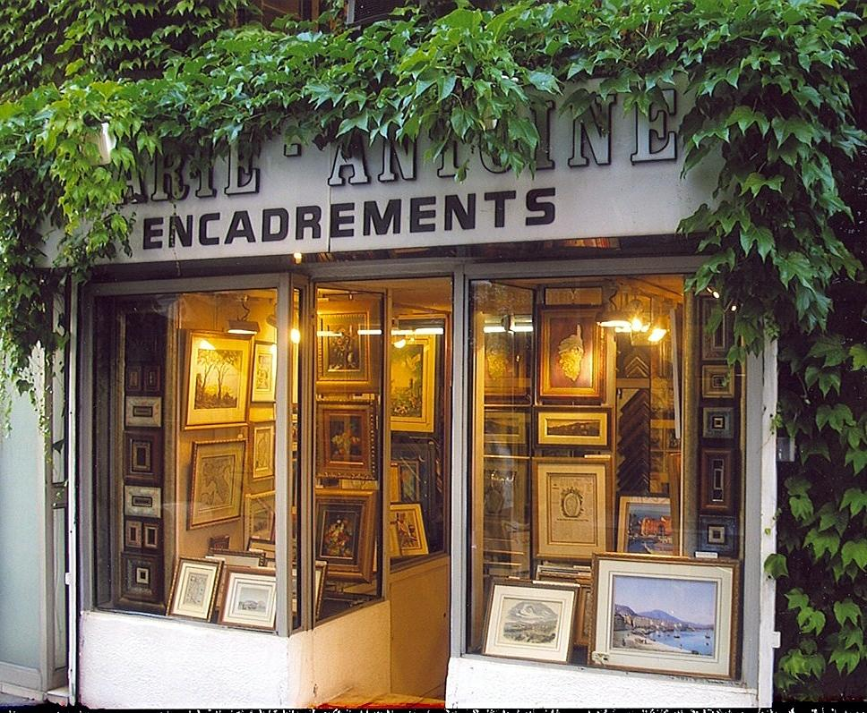
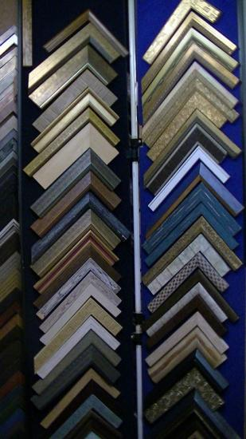
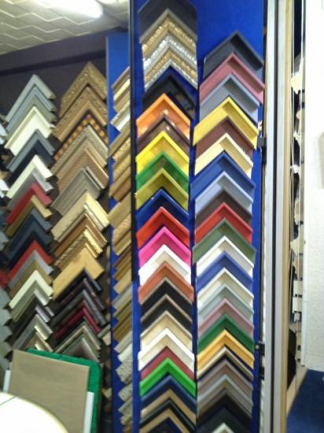
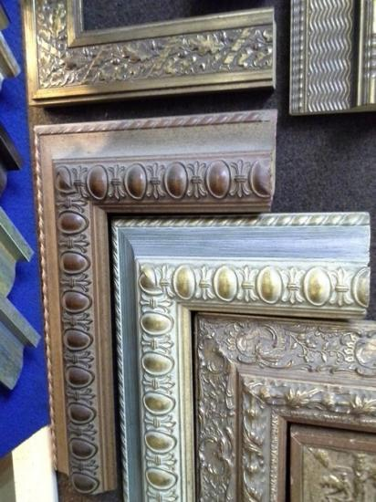
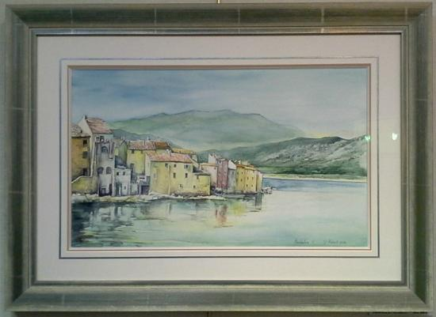
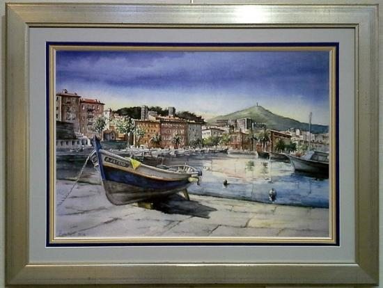
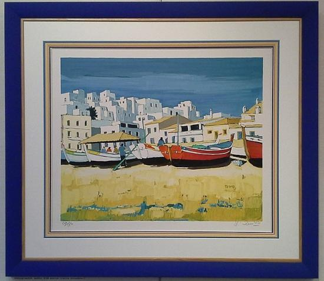
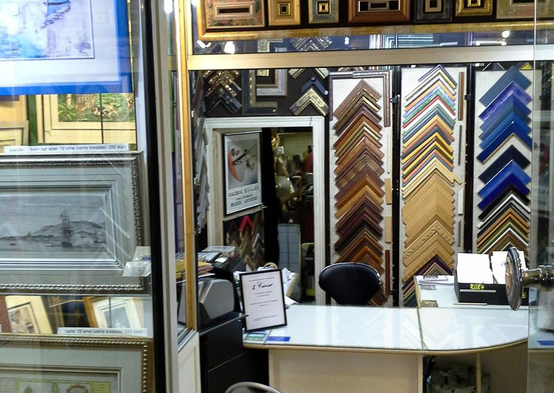
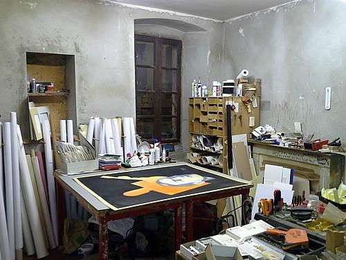
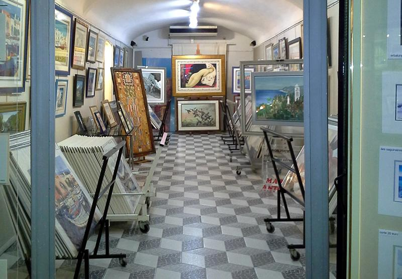

Rue Fesch · Ajaccio · depuis 1978
L'art de mettre vos œuvres en valeur.
Artisan encadreur installé rue Fesch depuis 1978, Marie-Antoine encadre peintures, aquarelles, lithographies et tapisseries pour les amateurs d'Ajaccio, de Porticcio et de toute la Corse-du-Sud.




Le bon cadre se choisit devant l'œuvre
Nous réalisons sur mesure toutes sortes d'encadrements, pour tous types d'œuvres. Nous vous conseillons en tenant compte de la pièce où l'œuvre sera accrochée, et nous cherchons une présentation originale qui ne la dénature pas.
- 3 000
- modèles de moulures
- 850
- modèles en stock au magasin
Un large choix de présentations
Et aussi : plexiglas, châssis et verre anti-reflet. Nous vous montrons au magasin ce qui convient à votre œuvre.
Marie-louise
Une bande intérieure qui fait respirer l'œuvre.
Biseau anglais
Une coupe en biais qui laisse un filet clair autour de l'œuvre.
Liserés multiples
Des filets de couleur tracés autour de l'œuvre.
Rehausses
Un relief de plus entre l'œuvre et le cadre.
Caisse américaine
La toile semble flotter dans son cadre.
Entre deux verres
L'œuvre prise entre deux verres, comme en suspension.
Tapisseries et tissus
Le montage des tapisseries, broderies et tissus.
Verre invisible des musées
Un verre presque sans reflet, pour voir l'œuvre comme sans vitre.
Aquarelles, lithographies et gravures
Exposées de façon éclectique : fines aquarelles de paysages corses, lithographies originales, gravures anciennes, peintures sur bois, reproductions sur toile et un espace imagerie. Nous assurons l'expédition des œuvres présentées.



Pour connaître les œuvres disponibles et leurs prix, appelez-nous ou passez à la galerie.
Nous appelerLa boutique, l'atelier, la galerie
Un professionnel connu et reconnu dans la région d'Ajaccio et de Porticcio, et dans toute la Corse-du-Sud.



68 rue Fesch, Ajaccio
- Mardi au vendredi
- 9 h à 12 h · 14 h à 18 h
- Samedi
- Le matin
- Samedi après-midi et lundi
- Sur rendez-vous
- Accès véhicules
- Tous les matins jusqu'à 11 h
- Livraison
- Prise en charge possible, nous contacter